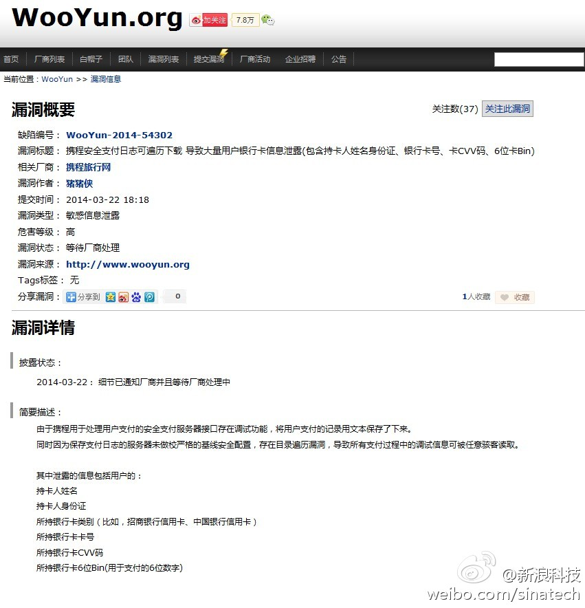

//@jackyrong //@龚俊飞爱生活:知道这意味着什么么？ 也就是你在携程用信用卡刷过，黑客知道了你信息，可以到国外网站乱刷卡了。国内网站刷信用卡需要短信验证，但是国外不需要。 如果在携程刷过卡，保险起见，还是挂失一下吧。 乌云平台的每一次曝光都没有失误过。
@新浪科技:
漏洞报告平台乌云(wooyun.org)今日发布的情况显示，携程安全支付日志可遍历下载，这一漏洞导致大量用户银行卡信息泄露，包含持卡人姓名身份证、银行卡号、卡CVV码、6位卡Bin。目前携程官方尚未对此做出详细回应。此外，携程还被曝某分站源代码包可直接下载。 携程被曝支付日志漏洞致用户信用卡信息泄露
携程被曝支付日志漏洞致用户信用卡信息泄露
- 